16/02/2019 — Bạn sẵn sàng chờ bao lâu để OMI trở thành STEMI (nếu nó có bao giờ trở thành)?
Bản dịch tiếng Việt của bài "How much time are you willing to wait for OMI to become STEMI (if it ever does)?" – Dr. Smith’s ECG Blog. Giữ nguyên toàn bộ 13 hình ảnh của bản gốc.
Tác giả: Pendell Meyers, Smith chỉnh sửa đôi chỗ
Một người đàn ông 60 mấy tuổi có tiền sử đột quỵ và tăng huyết áp nhưng chưa biết có bệnh tim, đến khám vì đau ngực khởi phát vào buổi sáng ngày nhập viện, khoảng 8 giờ sáng.
Đây là điện tâm đồ lúc phân loại (triage) của bệnh nhân khi đến viện lúc 1657:

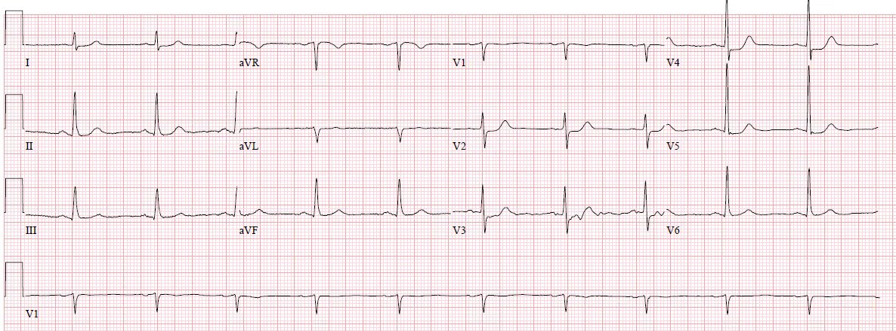
Nhịp xoang, phức bộ QRS bình thường, ST chênh xuống ở V2-V5, rõ nhất ở V3-V4. Không có ST chênh xuống ở V6, II, III hay aVF, và không có ST chênh lên đáng kể ở aVR; tất cả đều xác nhận rằng vectơ ST không phù hợp với thiếu máu cục bộ dưới nội tâm mạc lan tỏa, mà là một vectơ ST khu trú hướng về thành sau. Đây là OMI thành sau cho tới khi chứng minh được điều ngược lại.
Với những người đọc blog lâu năm, điện tâm đồ này khá hiển nhiên, và có thể bạn nghĩ nó quá dễ để được đăng trên blog này.
Nhưng trong thực hành thực tế, những bệnh nhân tương tự thường xuyên bị bỏ sót và điều trị không đầy đủ, như bạn sẽ thấy khi ca bệnh này tiếp diễn. Về mặt kỹ thuật, “STEMI thành sau” thậm chí có thể không tồn tại theo hướng dẫn STEMI hiện hành (2013) của ACC/AHA, vì nó không được mô tả là một “tương đương STEMI”, và câu duy nhất có liên quan trong hướng dẫn là: “Ngoài ra, ST chênh xuống ở 2 chuyển đạo trước tim (V1-V4) có thể chỉ điểm tổn thương xuyên thành ở thành sau.” JACC 61(4):e78-140; trang e83.
Hơn nữa, thuật ngữ “tương đương STEMI” không có ý nghĩa đáng tin cậy hay xác định được, trừ khi giữa hai người thầy thuốc cùng đồng ý với nhau về danh sách các thực thể mà họ tin là tương đương STEMI và cùng đồng ý về cách nhận diện chúng.
Đúng là thỉnh thoảng có các tài liệu khác mô tả “ST chênh lên bất thường” ở các chuyển đạo phía sau (tiêu chuẩn thường được chấp nhận là 0.5 mm chỉ ở một chuyển đạo V7-9), nhưng theo những gì tôi biết, tất cả các tài liệu này đều cố ý tránh gọi tình trạng này là STEMI và cố ý tránh dùng bất kỳ thuật ngữ nào tương tự như “tương đương STEMI.” Ngoại lệ duy nhất mà tôi tìm thấy là hướng dẫn của NCDR, vốn thực sự đưa ra một định nghĩa: “ST chênh lên ở các chuyển đạo ngực phía sau (V7 đến V9), hoặc ST chênh xuống rõ nhất ở V1-V3, không kèm ST chênh lên ở các chuyển đạo khác, cho thấy nhồi máu cơ tim thành sau-đáy, được xem là tương đương STEMI và đủ điều kiện để bệnh nhân được điều trị tái tưới máu.” Tôi thấy định nghĩa này có vấn đề vì ST chênh xuống tối đa trong OMI thành sau thường lan ra tới V4 chứ không chỉ tới V3.

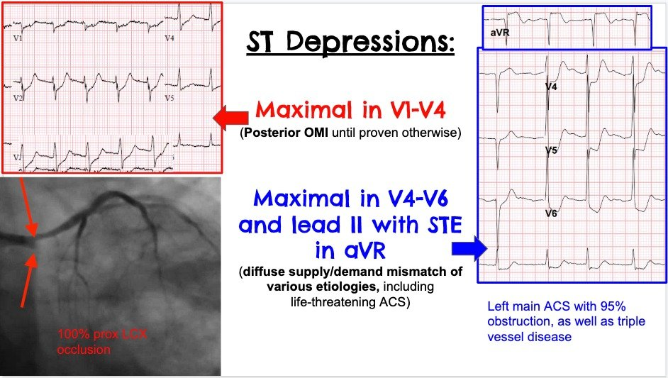
Vì vậy, với tôi, rất không rõ ràng liệu “STEMI thành sau” có thực sự là một thực thể được công nhận trong các hướng dẫn hiện hành của chúng ta hay không. Theo ý kiến của tôi, chính sự thiếu rõ ràng này là một phần lý do khiến bệnh nhân OMI thành sau thường bị nhận diện không đầy đủ và điều trị không đầy đủ. Bất kể về mặt hình thức ra sao, vấn đề quan trọng hơn là nó chắc chắn không được công nhận rộng rãi trong thực hành hiện nay.
Quay lại ca bệnh:
Như một thực hành đáng tiếc là khá phổ biến, điện tâm đồ ghi lại chỉ được thực hiện sau khi kết quả troponin T đầu tiên trả về tăng ở mức 0.19 ng/mL, 1.5 giờ sau khi đến viện.
Lúc 1833:

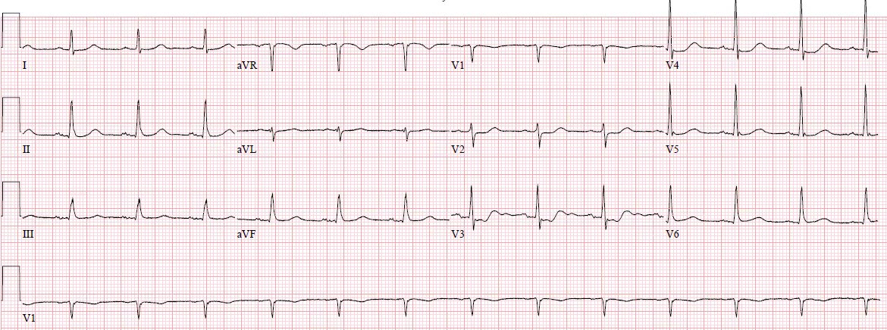
Điện tâm đồ này được đọc là “không có thay đổi đáng kể.” Bác sĩ tim mạch được gọi, nhưng vì lý do nào đó đã quyết định không đưa bệnh nhân vào phòng thông tim (cath lab), mà chỉ đơn giản cho nhập viện.
Troponin lần thứ hai trả về ở mức 0.25 ng/mL. Không có ghi nhận nào về việc bệnh nhân có còn triệu chứng hay không. Hồ sơ cho thấy đã có y lệnh truyền heparin liên tục, ngoài aspirin đã được dùng trước đó.
Troponin lần thứ ba trả về lúc 22:05 ở mức 0.92ng/mL. Một điện tâm đồ ghi lại được thực hiện lúc 2333, kèm một điện tâm đồ phía sau vài phút sau đó:

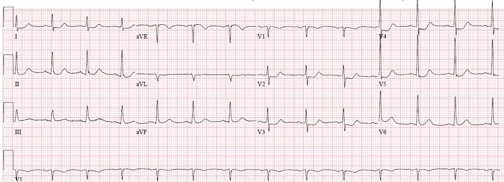

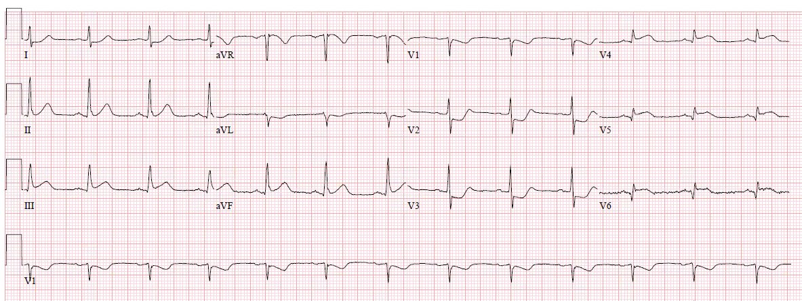
Vào thời điểm này, ngay trước nửa đêm, phòng thông tim được kích hoạt. Tổn thương cấp được báo cáo là tổn thương huyết khối 100% ở đoạn gần động mạch mũ trái (dòng chảy TIMI 0). Trên các góc chụp dưới đây, tôi đã đoán rằng mạch này là nhánh trung gian (ramus intermedius) vì nó có vẻ là mạch ở giữa trong chỗ chia ba của thân chung động mạch vành trái, nhưng tôi xin nhường lời cho các bác sĩ chụp mạch thực thụ. Hãy xem chỗ tắc tại đây:

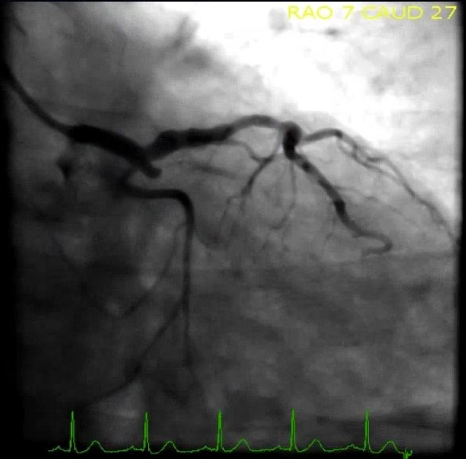

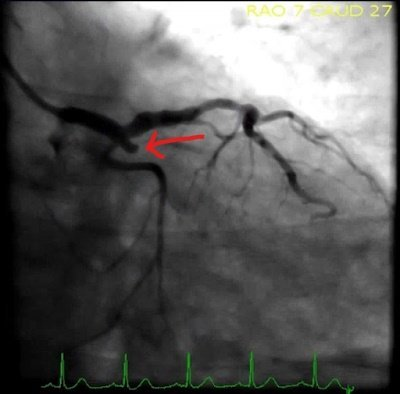

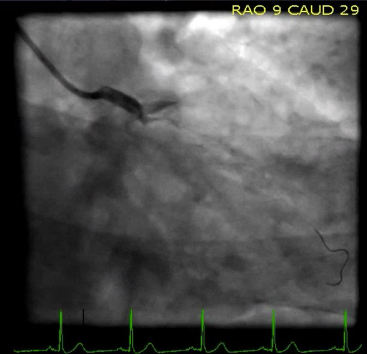

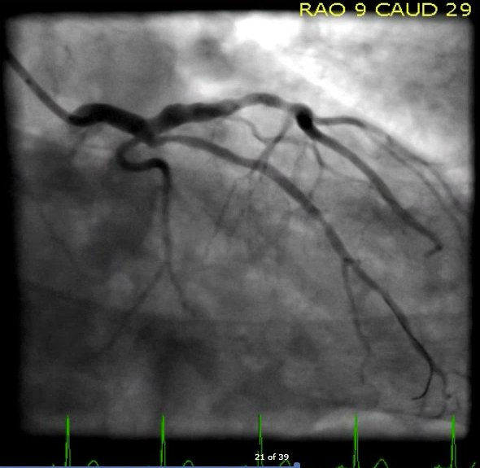
Đây là điện tâm đồ sau can thiệp cho thấy hồi phục:

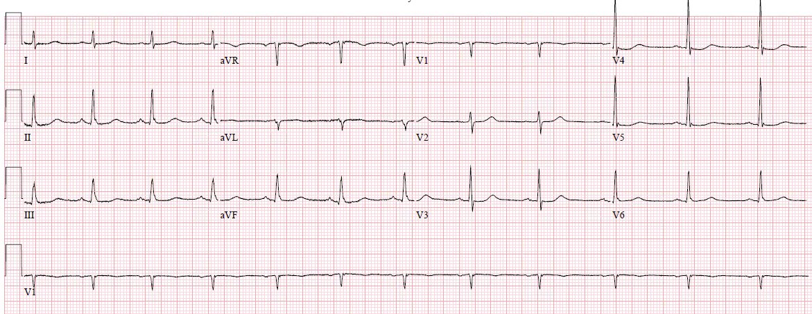
Troponin T đỉnh là 2.35 ng/mL (nhồi máu cơ tim khá lớn). Bệnh nhân không có thêm biến chứng nào. Đáng tiếc là không có siêu âm tim.
Tôi hy vọng bạn ngạc nhiên trước ca bệnh này, nhưng tôi e rằng phần lớn người đọc nhận ra đây là thực tế đáng buồn đang tồn tại ở nhiều cơ sở y tế tính đến năm 2019. Tôi cho rằng điều này chủ yếu là do mô hình hiện hành về nhồi máu cơ tim còn bất cập, vốn dẫn đến thất bại đối với tất cả những ca như vậy khi chúng không rõ ràng theo tiêu chuẩn STEMI. Nếu ca này là tắc cấp tính của BẤT KỲ động mạch quan trọng nào khác (ví dụ như động mạch mạc treo tràng trên, hoặc động mạch não giữa), thì 7 giờ từ lúc đến viện tới lúc chẩn đoán, dù liên tục có bằng chứng tắc mạch, sẽ bị xem là một sự chậm trễ chẩn đoán nghiêm trọng và không thể chấp nhận. Thế nhưng trong mô hình STEMI vs. NSTEMI của chúng ta, tình trạng này đơn giản là không được hiểu như một hội chứng tắc động mạch cấp cứu. “Thời gian là cơ tim,” nhưng không hiểu sao chỉ áp dụng cho những chỗ tắc gây ra STEMI, chứ không áp dụng cho những chỗ tắc kín đáo hơn.
Hy vọng việc sửa lại mô hình bằng cách định khung lại bệnh lý này như một tình trạng tắc động mạch cấp sẽ giúp mọi người hiểu được vấn đề. Bệnh nhân này bị nhồi máu cơ tim do tắc (OMI) và cần điều trị tái tưới máu cấp cứu. Lẽ thường là những bệnh nhân như vậy có xác suất sống sót và bảo tồn cơ tim cao hơn nếu OMI được tái tưới máu sớm, và không có nghiên cứu nào mâu thuẫn với quan niệm này.
Những ca như thế này sẽ được định lượng và nghiên cứu kỹ lưỡng trong nghiên cứu hồi cứu đang tiến hành của chúng tôi, được thiết kế để định lượng sự khác biệt về độ chính xác giữa đọc điện tâm đồ nâng cao và tiêu chuẩn STEMI hiện hành. Cụ thể, những ca như ca này sẽ cho thấy chi tiết sự khác biệt về thời gian chẩn đoán nhồi máu cơ tim do tắc giữa chuyên gia đọc điện tâm đồ và tiêu chuẩn STEMI hiện hành. Ví dụ, ở ca này, thời gian thiếu máu cục bộ giữa lúc đến viện và lúc kích hoạt phòng thông tim là gần 7 giờ.
Bạn sẵn sàng chờ bao lâu để OMI trở thành “STEMI” (nếu nó có bao giờ trở thành)?
Bình luận của K. Wang:
Như thường lệ, ca bệnh này nêu ra một điểm rất quan trọng
về mặt lâm sàng. “STEMI” là gì? Đó là biểu hiện trên điện tâm đồ của
nhồi máu cơ tim xuyên thành do một động mạch vành bị tắc, được ghi nhận ở các
chuyển đạo HƯỚNG VỀ thành thất bị nhồi máu. Đúng vậy, nhồi máu cơ tim xuyên thành cũng xảy ra
ở thành sau, Lý do duy nhất khiến chúng ta không thấy ST chênh lên
trên điện tâm đồ 12 chuyển đạo “thường quy” là vì nó không bao gồm các chuyển đạo
ngực phía sau, vốn là các chuyển đạo HƯỚNG VỀ thành bị nhồi máu. Vậy chúng ta có
phải ghi các chuyển đạo ngực phía sau để thấy nó không? Không, chúng ta đã có sẵn nó rồi .
Nó nằm ở các chuyển đạo ngực phía trước, được ghi nhận theo kiểu soi gương, tức là lộn
ngược, dưới dạng ST chênh xuống. Nếu muốn xác nhận, chỉ cần cầm
bản ghi lên, lật ngược lại và soi nó trước ánh sáng. Ở đó, ta sẽ
thấy một STEMI điển hình đúng như mong đợi. Tôi đồng ý với Dr. Smith rằng,
nếu hướng dẫn ACC hiện hành chưa rõ ràng về STEMI thành sau, thì cần
làm rõ điều đó để chăm sóc bệnh nhân tốt hơn.
K. Wang.

==================================
BÌNH LUẬN CỦA TÔI, bởi KEN GRAUER, MD (16/2/2019):
==================================
Tầm quan trọng của việc nhận diện sớm một OMI cấp (thay vì chờ tới khi nó trở thành một “stemi” ) không thể nào nhấn mạnh cho đủ! Hậu quả của việc không nắm được khái niệm then chốt này được thể hiện rõ một cách đau lòng trong ca bệnh này của Dr. Meyers — trong đó phải mất hơn 6 giờ thì người đàn ông bị đau ngực mới khởi phát này mới cuối cùng được đưa vào phòng thông tim. Dr. Meyers đã điểm lại xuất sắc (ở trên) các chi tiết của ca bệnh này. Tôi tập trung Bình luận của mình vào 3 trong số các điện tâm đồ được trình bày trong ca này (Hình 1).

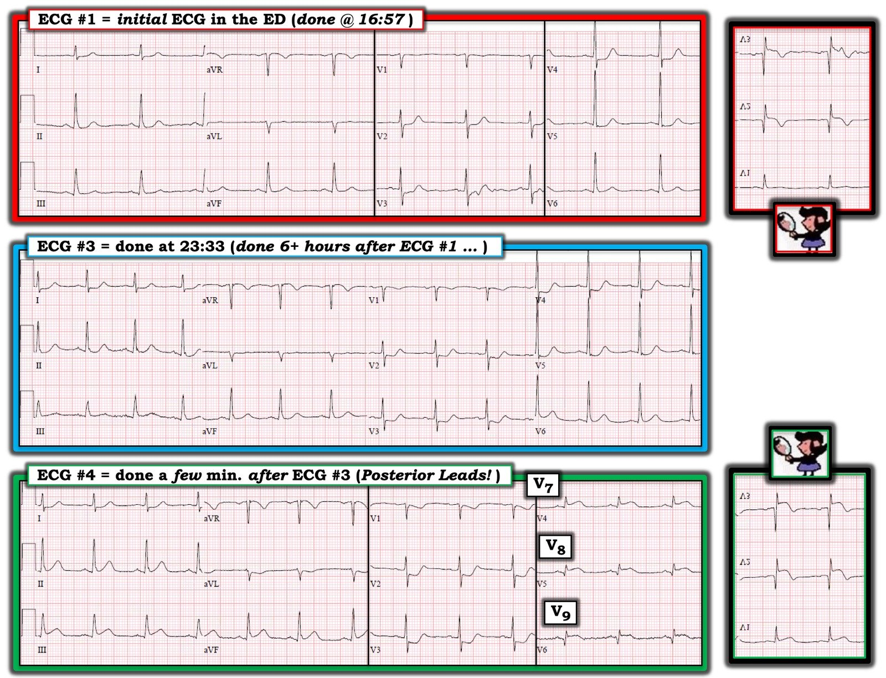
===================
Mấu chốt của ca này — là việc không nhận ra rằng OMI thành sau cấp đã hiện rõ trên điện tâm đồ ban đầu tại khoa cấp cứu ( = điện tâm đồ #1). Các dấu hiệu bất thường trên điện tâm đồ #1 có tính khu trú (tức là, ST chênh xuống ở các chuyển đạo từ V2 đến V5) — và, trong bối cảnh đau ngực mới khởi phát — điện tâm đồ #1 cần được đọc là OMI thành sau cấp cho tới khi chứng minh được điều ngược lại. Nếu các bác sĩ điều trị nhận ra những khái niệm này — họ đã: i) ghi điện tâm đồ thứ 2 từ lâu trước 18:33 (~ 1 1/2 giờ sau khi ghi điện tâm đồ #1); và, ii) họ đã đề nghị kích hoạt phòng thông tim.
- ĐỀ XUẤT: Hãy cân nhắc sử dụng “Nghiệm pháp Soi gương” (Mirror Test). Tôi đã giảng dạy khái niệm này hơn 36 năm (kể từ khi đưa nó vào ấn phẩm điện tâm đồ đầu tiên mà tôi viết năm 1983). Nghiệm pháp soi gương là một công cụ hỗ trợ thị giác đơn giản: Nó giúp người thầy thuốc nhận ra nhồi máu thành sau cấp. Nghiệm pháp soi gương dựa trên khái niệm rằng không chuyển đạo nào trong 12 chuyển đạo chuẩn nhìn trực tiếp vào thành sau của LV — NHƯNG — các chuyển đạo phía trước cung cấp một hình ảnh soi gương của hoạt động điện ở thành sau. Chỉ cần lật ngược một điện tâm đồ 12 chuyển đạo chuẩn, rồi soi nó lên trước ánh sáng — bạn có thể dễ dàng hình dung được “hình soi gương” của các chuyển đạo V1, V2 và V3. Có thể thấy ngay rằng hình soi gương của các chuyển đạo V2 và V3 trên điện tâm đồ #1 (ngay bên phải điện tâm đồ #1 trong Hình 1) — cho thấy một phức bộ QRST gần như đang hét lên rằng, “Tôi đang bị OMI thành sau cấp (tức là, sóng Q lớn; ST chênh lên dạng vòm và sóng T đảo ngược đối xứng trên hình soi gương này). Chỉ cần luyện tập một chút — việc sử dụng Nghiệm pháp soi gương sẽ giúp nhận ra gần như tức thì những thay đổi kín đáo như sóng R phía trước hơi cao hơn mong đợi ở các chuyển đạo V2 và V3 trên điện tâm đồ #1 (vốn “trở thành” sóng Q trên hình soi gương) — và ST chênh xuống “dạng bậc thềm” (tức là, gần như thẳng) ở các chuyển đạo V2,V3 trên điện tâm đồ #1 (vốn “trở thành” ST chênh lên trên hình soi gương).
===================
Điện tâm đồ #2 (không được trình bày trong Hình 1) — được ghi ~1 1/2 giờ sau điện tâm đồ #1. Nó cho thấy ST chênh xuống ít hơn một chút so với điện tâm đồ #1 — nhưng không có dấu hiệu ST chênh lên (tức là, không có “stemi” ).
===================
Việc xem lại điện tâm đồ #3 và #4 đặc biệt thú vị. Điện tâm đồ #3 được ghi 6+ giờ sau điện tâm đồ #1. Nó cho thấy ST chênh xuống dốc xuống và hơi nhiều hơn ở một số chuyển đạo ngực so với điện tâm đồ #1 — nhưng vẫn KHÔNG có ST chênh lên ở các chuyển đạo thành dưới, và KHÔNG có ST chênh xuống soi gương ở chuyển đạo aVL.
- Điện tâm đồ #4 được ghi chỉ vài phút sau điện tâm đồ #3 với mục đích đánh giá trực tiếp các chuyển đạo phía sau V7, V8 và V9. Các chuyển đạo phía sau này cho thấy ST chênh lên rõ ràng. Nhưng BẠN CÓ THẤY rằng điện tâm đồ thứ 4 này (được ghi chỉ vài phút sau điện tâm đồ #3) nay cho thấy: i) ST chênh lên ở các chuyển đạo III và aVF mà không có trên điện tâm đồ #3; ii) ST chênh xuống soi gương ở chuyển đạo aVL mà trước đó không có; và, iii) ST-T chênh xuống nhiều hơn đáng kể ở các chuyển đạo V1, V2, V3 so với những gì thấy CHỈ VÀI PHÚT TRƯỚC ĐÓ ở chính các chuyển đạo này trên điện tâm đồ #3. Điều này có nghĩa là trên điện tâm đồ #4, chúng ta vừa mới bắt được các thay đổi tiến triển cấp, đang diễn tiến ngay trước mắt chúng ta trong vỏn vẹn vài phút giữa thời điểm ghi điện tâm đồ #3 và 4.
- Điểm MẤU CHỐT —Mặc dù nhiều người thầy thuốc ủng hộ việc ghi các chuyển đạo phía sau khi tìm tổn thương thành sau cấp — hãy nhận thức rằng độ lớn của ST chênh lên mà bạn có thể thấy ở các chuyển đạo phía sau trong nhồi máu thành sau cấp thường khiêm tốn. Lý do mức ST chênh lên ở các chuyển đạo V7, V8 và V9 trên điện tâm đồ #4 lớn như vậy — là vì điện tâm đồ #4 này được ghi đúng vào những khoảnh khắc quá trình tiến triển cấp đang diễn ra (tức là, Lưu ý rằng nay đã có ST chênh lên ở các chuyển đạo thành dưới trên điện tâm đồ #4 — và lưu ý ST chênh xuống dốc xuống sâu đến mức nào ở các chuyển đạo V2 và V3).
- Cuối cùng — Hãy lưu ý nhồi máu thành sau cấp hiển nhiên đến mức nào trên Nghiệm pháp Soi gương của các chuyển đạo V1, V2, V3 trên điện tâm đồ #4 (hình chèn bên phải điện tâm đồ #4 trong Hình 1). Trong khi việc dùng các chuyển đạo phía sau (V7,V8,V9) đã cho thấy rõ ST chênh lên trên điện tâm đồ #4 — Liệu các chuyển đạo phía sau có thực sự cần thiết để chẩn đoán STEMI trong ca này? Tôi không nói rằng bạn không bao giờ nên ghi các chuyển đạo phía sau — mà đúng hơn là, chỉ cần luyện tập một chút — có thể chẩn đoán OMI thành sau cấp nhanh hơn nhiều chỉ bằng điện tâm đồ 12 chuyển đạo chuẩn. BÌNH LUẬN — Tôi không nghĩ mình từng gặp ca nào mà các chuyển đạo phía sau cho tôi biết điều gì đó tôi chưa biết ngay từ điện tâm đồ 12 chuyển đạo chuẩn (kèm Nghiệm pháp soi gương của các chuyển đạo phía trước).
Chúng tôi xin CẢM ƠN Dr. Meyers và Dr. Smith đã trình bày ca bệnh rất sâu sắc này.
==========================
XEM THÊM:
- Một ví dụ khác về Nghiệm pháp Soi gương— BẤM VÀO ĐÂY.